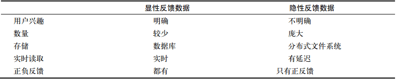
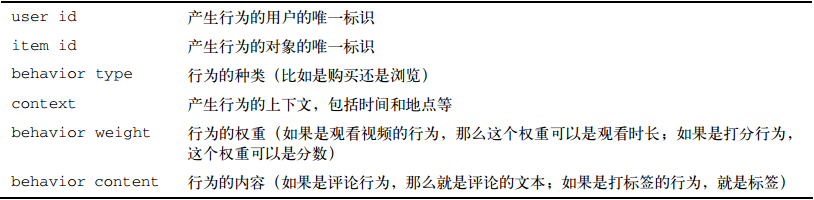
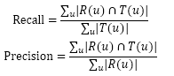
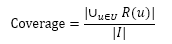

(1) 实现个性化推荐最理想的情况就是在注册时候让用户主动告诉我们他喜欢什么，但这种方法有3个缺点：
a. 自然语言理解技术有限
b. 用户的兴趣会变
c. 用户自己也很难描述
(2) 用户的行为不是随机的，而是蕴含着很多模式。
(3) 基于用户行为分析的推荐算法是个性化推荐系统的重要算法，学术界称之为“协同过滤算法”。
一、 用户行为数据简介
1. 原始日志（文件系统）–> 会话日志 –> 展示日志
2. 用户行为分为2种
a. 显性反馈行为（explicit feedback）：评分等
b. 隐性反馈行为（implicit feedback）：页面浏览行为等

3. 用户行为的衡量
6个部分：
a. 产生行为的用户
b. 行为的对象
c. 行为的种类
d. 产生行为的上下文
e. 行为权重
f. 行为内容

这六个部分不一定要同时具备，而是针对不同的行为给出不同表示，像“上下文”有时可以忽略。一般来说，不同的数据集包含不同的行为，比较有代表性的数据集有如下4个：
a. 无上下文信息的隐性反馈数据集
b. 无上下文信息的显性反馈数据集
c. 有上下文信息的隐性反馈数据集
d. 有上下文信息的显性反馈数据集
（本章使用的数据集基本都是第一种）
二、 用户行为分析
1. 用户活跃度和物品流行度的分布
令fu(k)为对k个物品产生过行为的用户数；fi(k)为被k个用户产生过行为的物品数。则：
fu(k) = aukBu —— 用户活跃度
fi(k) = aikBi —— 物品流行度
这种关系称为长尾分布。长尾分布在双对数曲线上应该呈直线。
2. 用户活跃度和物品流行度的关系
实验表明：用户越活跃，越倾向于浏览冷门的物品。
研究用户行为的推荐 = 协同过滤算法 –> 基于领域的、隐语义模型、基于图的随机游走算法
（基于邻域的方法中应用最广泛的：基于用户的协同过滤算法、基于物品的协同过滤算法）
三、 实验设计和算法测评
1. 实验方法：离线实验
数据集：GroupLens提供的MovieLens数据集
2. 实验设计：
a. 将用户行为数据集按照均匀分布随机分成M份（本章取M=8），挑1份作为测试集，(M-1)份为训练集。
b. 在训练集上建立用户兴趣模型，并在测试集上对用户行为进行预测，统计出相应的测评指标。为了保证测评指标不是过拟合的结果，需要进行M次实验，每次都使用不同的测试集。
c. 将M次实验测出的评测指标的平均值作为最终的评测指标。
3. 测评指标
对用户u推荐N个物品（记为R(u)），令用户u在测试集上喜欢的物品集合为T(u)，然后可以通过准确率/召回率评测推荐算法的精度：

召回率：有多少比例的用户-物品评分记录包含在最终的推荐列表中；
准确率：最终的推荐列表中有多少比例是发生过的用户-物品评分记录。
最简单的覆盖率定义：

覆盖率能反映推荐算法发掘长尾的能力，覆盖率越高说明算法越能对长尾中的物品推荐给用户。如果所有物品都能被推荐给至少一个用户，那么覆盖率就是100%
新颖性，可以用推荐结果中物品的平均流行度（画图是记得取对数，画出来会更平直，因为是长尾分布）来度量。